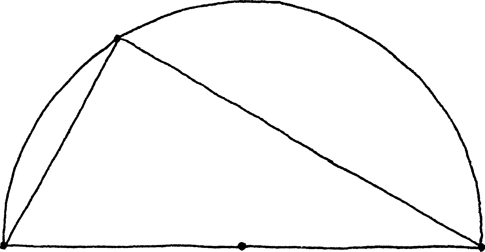
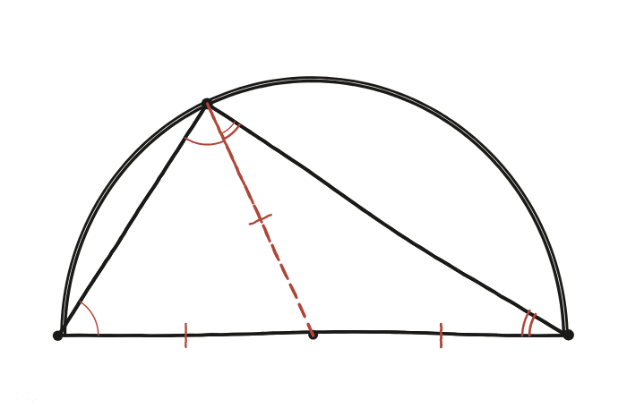

Quan un punt d'una circumferència es connecta amb els dos extrems d'un diàmetre, sempre forma un angle recte. Per què?

"Sempre" és la part que cal demostrar
No n'hi ha prou de comprovar-ho amb un punt concret: cal un argument que valgui sigui quin sigui el punt de l'arc que es triï, sense que el resultat final pugui dependre d'on s'hagi posat exactament.
Un punt que no és decoratiu
El dibuix marca un punt al mig de la base, encara que l'enunciat no en digui res. Aquest punt és el centre de la circumferència, i unir-lo amb el punt de l'arc és la clau de tota la demostració: crea dos segments que, junts amb els dos extrems del diàmetre, ja se sap que fan la mateixa llargada —tots tres són radis.
Dos triangles isòsceles
El radi que va del centre fins al punt de l'arc parteix el triangle gran en dos triangles petits, cadascun amb dos costats iguals al radi: tots dos són isòsceles. En un triangle isòsceles, els dos angles de la base són sempre iguals entre si —per això la figura marca dos angles amb un sol arc (iguals entre ells) i dos amb doble arc (iguals entre ells), sense que calgui que un arc i un doble arc coincideixin.

Sumar els tres angles del triangle gran
Anomenant α i β els dos angles de la base del triangle gran (els que es veuen des dels dos extrems del diàmetre), l'angle del vèrtex superior —el que interessa— queda partit pel radi central en exactament α i β, un tros de cada triangle isòsceles. La suma dels tres angles del triangle gran és sempre 180°: α + (α+β) + β = 180°, és a dir, 2α+2β=180°, i per tant α+β=90° —que és, precisament, l'angle del vèrtex superior.
Sempre 90°, sigui quin sigui el punt de l'arc. El radi cap a aquest punt crea dos triangles isòsceles, i sumant els tres angles del triangle gran com α+(α+β)+β=180° s'obté directament α+β=90°, l'angle buscat, sense que l'argument depengui en cap moment de la posició concreta del punt.
Comprovació
Amb el punt al capdamunt (just sobre el centre): per simetria α=β=45°, i 45°+45°=90° ✓. Amb el punt gairebé enganxat a un extrem: el triangle es fa finíssim, però l'argument no ha fet servir en cap moment on exactament és el punt —només que els tres segments són radis— així que l'angle continua sent 90° per molt prim que es faci el triangle.